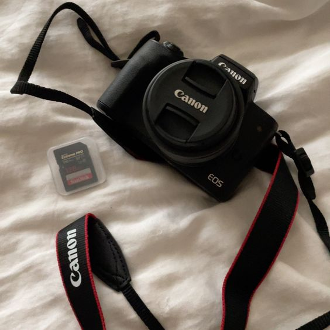
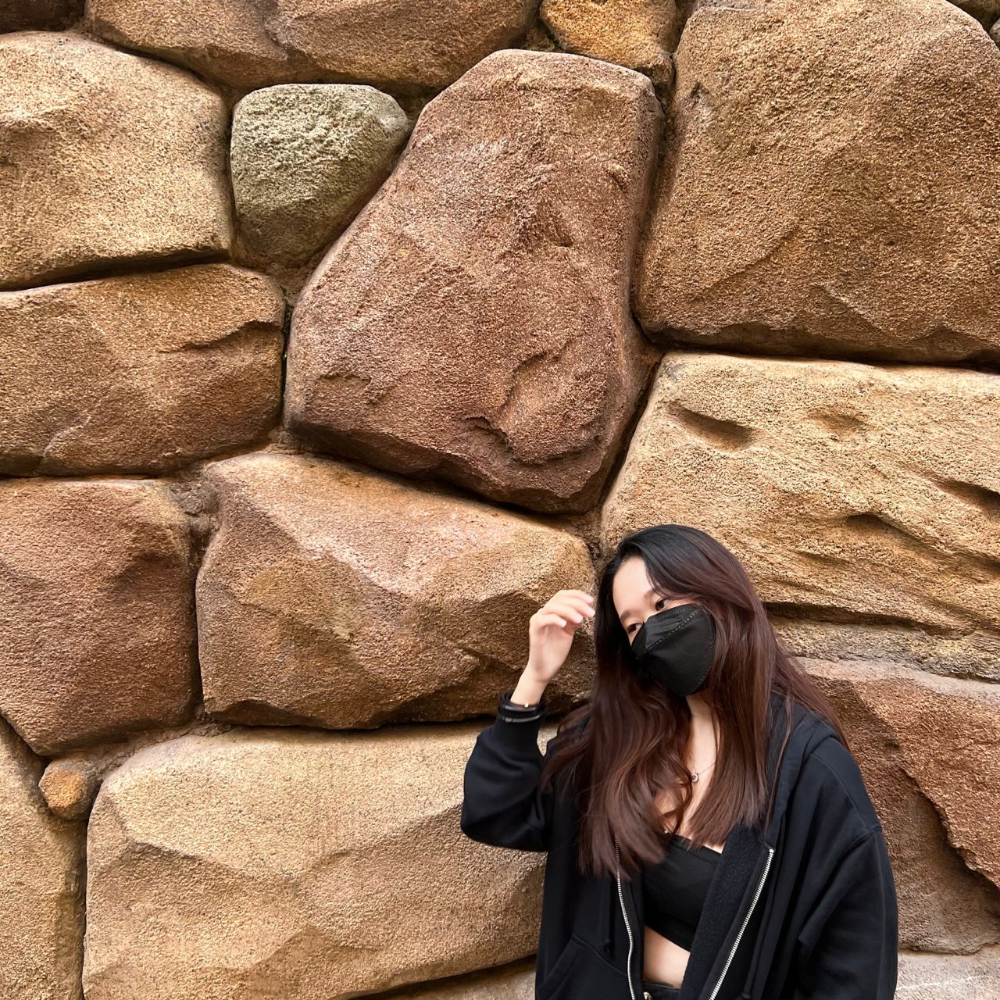

This is my capture device for my photography inside my profile ,
and this device name is canon M50 MARK II this is the good camera .
camera is a device that captures and records images or videos.
Cameras come in various shapes and sizes, from small handheld point-and-shoot cameras to large professional cameras used in photography and filmmaking.
Overall, cameras have become an essential tool for capturing and preserving memories, documenting events, and creating art.


Hi my name is Joe Peng you also can call me as Jojo. :)
I am study in Tunku Abdul Rahman University of Management and Technology (TAR UMT),
and this is my first time to creat a portfolio webpage .And this also as my assignment for my Fundamentals of Webpage
Thanks for your review and hope you enjoy about my webpage.